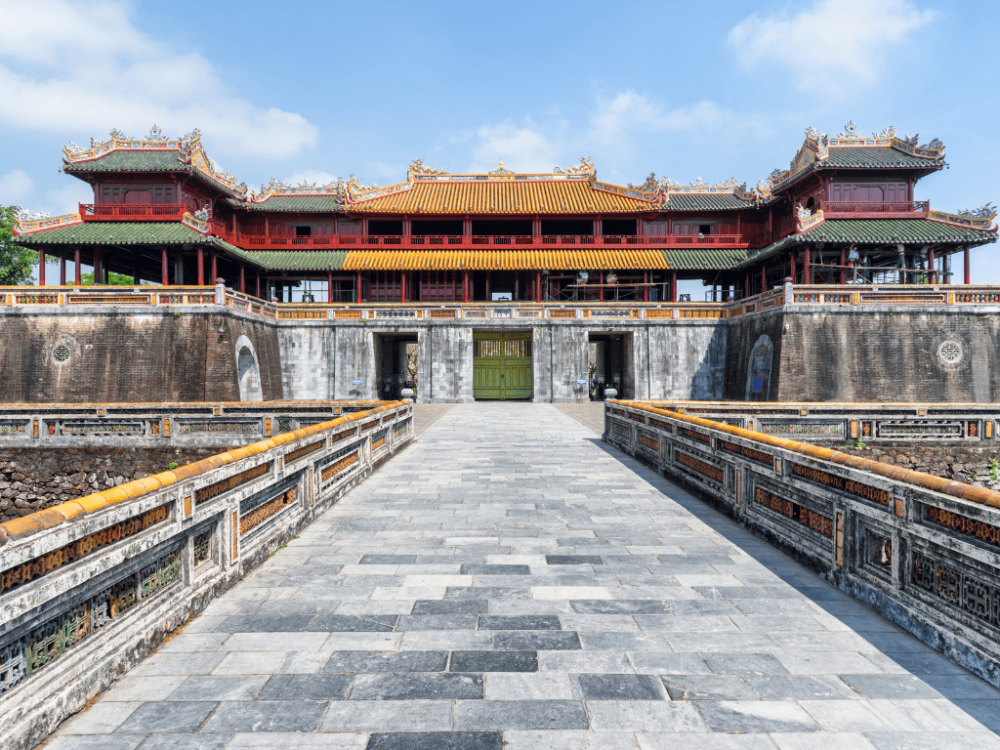
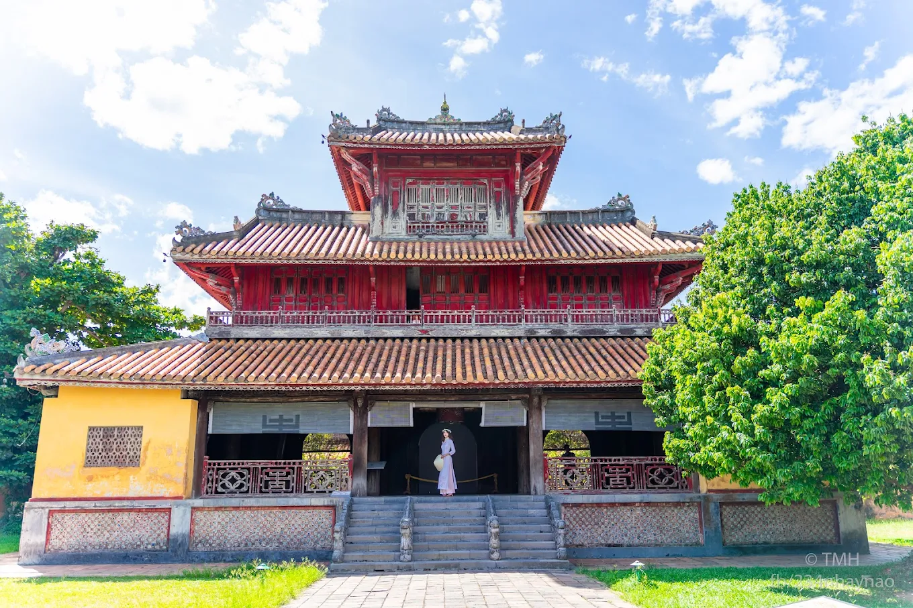

Kiến trúc
Đại Nội gồm 3 vòng thành chính: Kinh Thành: vòng ngoài cùng, nơi bảo vệ kinh đô. Hoàng Thành: nơi diễn ra các hoạt động triều chính. Tử Cấm Thành: khu vực sinh hoạt riêng của vua và hoàng gia.

Ngọ Môn

Điện Thái Hòa

Tử Cấm Thành

Hiển Lâm Các